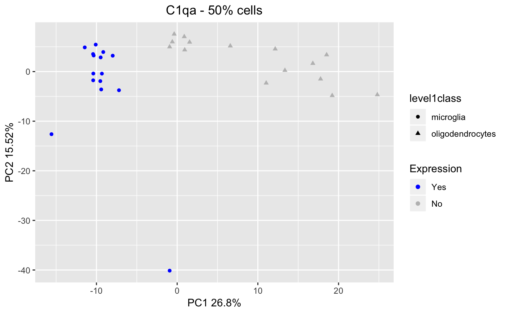
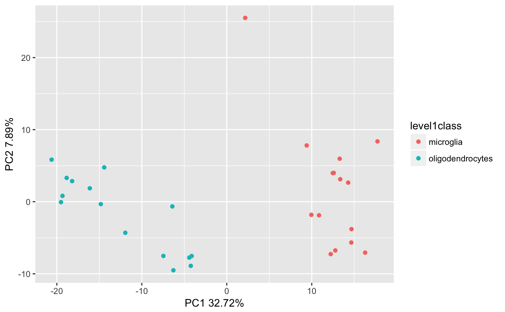

Get and plot PCA and t-SCE components for a SCtkE object
getPCA.RdSelects the 500 most variable genes in the SCE, performs PCA or t-SNE based on them and stores the values in the reducedDims slot of the SCE object.
getBiomarker(inSCE, gene, binary = "Binary", useAssay = "counts") getPCA(inSCE, useAssay = "logcounts", reducedDimName = "PCA") getTSNE(inSCE, useAssay = "logcounts", reducedDimName = "TSNE") plotBiomarker(inSCE, gene, binary = "Binary", visual = "PCA", shape = "No Shape", x = "PC1", y = "PC2", useAssay = "counts", reducedDimName = "PCA") plotPCA(inSCE, colorBy = "No Color", shape = "No Shape", pcX = "PC1", pcY = "PC2", reducedDimName = "PCA", runPCA = FALSE, useAssay = "logcounts") plotTSNE(inSCE, colorBy = "No Color", shape = "No Shape", reducedDimName = "TSNE", runTSNE = FALSE, useAssay = "logcounts")
Arguments
| inSCE | Input SCtkExperiment object. Required |
|---|---|
| gene | gene list |
| binary | "Binary" for binary expression or "Continuous" for a gradient. Default: "Binary" |
| useAssay | Indicate which assay to use for PCA. Default is "counts" |
| reducedDimName | Store the PCA data with this name. The default is PCA. The toolkit will store data with the pattern <ASSAY>_<ALGORITHM>. |
| visual | Type of visualization (PCA or tSNE). Default: "PCA" |
| shape | Shape of the points |
| x | x coordinate for PCA |
| y | y coordinate for PCA |
| colorBy | The variable to color clusters by |
| pcX | User choice for the first principal component |
| pcY | User choice for the second principal component |
| runPCA | Run PCA if the reducedDimName does not exist. the Default is FALSE. |
| runTSNE | Run t-SNE if the reducedDimName does not exist. the Default is FALSE. |
Value
getBiomarker(): A data.frame of expression values
getPCA(): A SCtkE object with the specified reduecedDim and pcaVariances updated
getTSNE(): A SCtkE object with the specified reduecedDim and pcaVariances updated
plotBiomarker(): A Biomarker plot
plotPCA(): A PCA plot
plotTSNE(): A t-SNE plot
Functions
getBiomarker: Given a list of genes and a SCtkExperiment object, return the binary or continuous expression of the genes.getPCA: Get PCA components for a SCtkE objectgetTSNE: Get t-SNE components for a SCtkE objectplotBiomarker: Given a set of genes, return a ggplot of expression values.plotPCA: plot PCA resultsplotTSNE: plot t-SNE results
Examples
getBiomarker(mouseBrainSubsetSCE, gene="C1qa")#> sample C1qa #> X1772063061_G11 X1772063061_G11 FALSE #> X1772067064_C10 X1772067064_C10 FALSE #> X1772062113_D09 X1772062113_D09 FALSE #> X1772062111_A12 X1772062111_A12 FALSE #> X1772071040_C12 X1772071040_C12 FALSE #> X1772062111_D09 X1772062111_D09 FALSE #> X1772071036_G02 X1772071036_G02 FALSE #> X1772071040_D04 X1772071040_D04 FALSE #> X1772058177_E12 X1772058177_E12 FALSE #> X1772066070_G10 X1772066070_G10 FALSE #> X1772063074_G10 X1772063074_G10 FALSE #> X1772062115_E07 X1772062115_E07 FALSE #> X1772062109_F01 X1772062109_F01 FALSE #> X1772060226_G05 X1772060226_G05 FALSE #> X1772066108_D06 X1772066108_D06 FALSE #> X1772060224_F07 X1772060224_F07 TRUE #> X1772062111_F12 X1772062111_F12 TRUE #> X1772063078_G02 X1772063078_G02 TRUE #> X1772060240_H11 X1772060240_H11 TRUE #> X1772067094_C07 X1772067094_C07 TRUE #> X1772058177_A09 X1772058177_A09 TRUE #> X1772058171_C05 X1772058171_C05 TRUE #> X1772062128_B03 X1772062128_B03 TRUE #> X1772062118_F04 X1772062118_F04 TRUE #> X1772062109_E05 X1772062109_E05 TRUE #> X1772062128_D02 X1772062128_D02 TRUE #> X1772062109_E12 X1772062109_E12 TRUE #> X1772062113_E05 X1772062113_E05 TRUE #> X1772062128_F05 X1772062128_F05 TRUE #> X1772062118_D09 X1772062118_D09 TRUEdata("mouseBrainSubsetSCE") #add a CPM assay assay(mouseBrainSubsetSCE, "cpm") <- apply(assay(mouseBrainSubsetSCE, "counts"), 2, function(x) { x / (sum(x) / 1000000) }) mouseBrainSubsetSCE <- getPCA(mouseBrainSubsetSCE, useAssay = "cpm", reducedDimName = "PCA_cpm") reducedDims(mouseBrainSubsetSCE)#> List of length 5 #> names(5): PCA_counts PCA_logcounts TSNE_counts TSNE_logcounts PCA_cpmdata("mouseBrainSubsetSCE") #add a CPM assay assay(mouseBrainSubsetSCE, "cpm") <- apply( assay(mouseBrainSubsetSCE, "counts"), 2, function(x) { x / (sum(x) / 1000000) }) mouseBrainSubsetSCE <- getTSNE(mouseBrainSubsetSCE, useAssay = "cpm", reducedDimName = "TSNE_cpm") reducedDims(mouseBrainSubsetSCE)#> List of length 6 #> names(6): PCA_counts PCA_logcounts TSNE_counts TSNE_logcounts PCA_cpm TSNE_cpmdata("mouseBrainSubsetSCE") plotBiomarker(mouseBrainSubsetSCE, gene="C1qa", shape="level1class")data("mouseBrainSubsetSCE") plotPCA(mouseBrainSubsetSCE, colorBy = "level1class", reducedDimName = "PCA_counts")data("mouseBrainSubsetSCE") plotTSNE(mouseBrainSubsetSCE, colorBy = "level1class", reducedDimName = "TSNE_counts")